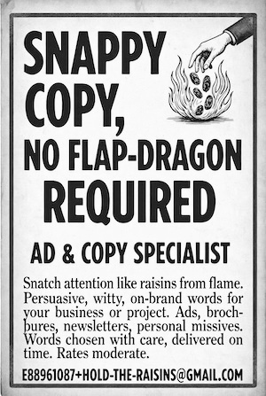

Big Content Energy / Not the Newspaper

Big Content Energy is the personal publishing experiment behind Not the Newspaper — a series of editions mixing essays, wordplay, books, health notes, and fake vintage ads.
It is where professional craft and personal voice share a table: content systems, resilience, rural life, AI, and the human side of marketing.
Related essays also appear in Serials. Full edition archive is on this site under Not the Newspaper.
This archive page is the stable home for describing the project without depending on a domain that may go dark.